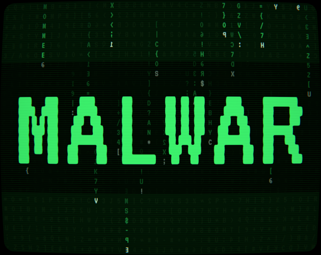

Ludum Dare 60 · Game Jam
MalWar
Incremental typing game on an infected old PC: type attack phrases like savage crushing knockdown to push back a falling wall of code, free disk space, and spend it on upgrades and sub-terminals that type for you. Built for Ludum Dare 60, theme "Old Tech".
- Role
- Programmer (gameplay systems, UI, tools, audio)
- Timeline
- 3 days
- Team Size
- 3 people

Project highlight
- Built a headless balance simulator that plays the whole game without a scene on the same systems, with slow / average / fast typist profiles over seeded runs, and reports time to clear, upgrade timelines, and the longest stretch without a purchase.
- Recreated the look and feel of an old console: a custom CRT shader with screen curvature, scanlines, and glitch bursts that grow as the wave closes in, plus a raycaster that bends clicks through the same curve so the UI stays clickable where it is drawn.
-
Rendered the whole code-rain wave as one custom UI mesh (
MaskableGraphic): every falling glyph is a quad sampled straight from the terminal font's dynamic texture, so there is no extra atlas, and the mesh rebuilds its UVs whenever Unity regenerates that texture. - Kept the game logic in plain C# models wired in a single composition root, with one hit pipeline (parse → damage → bytes) shared by the player and the sub-terminals; that separation is what let the balance simulator run the real systems without a scene.
What I built
- Wrote the phrase parser and damage pipeline: the noun's length sets the damage, adjectives multiply it with diminishing returns, and a diversity bonus rewards varied nouns.
- Built a hidden 225-word dictionary with discovery rewards, typo tolerance (edit distance with early exit), a letter-by-letter Dictionary Scanner, and a JSON save kept in the browser (IndexedDB).
-
Implemented 12 upgrades (101 levels), auto-typing sub-terminals with Overclock, Autocomplete,
Caps Lock, and a terminal command router (
help,upgrade,dict,overclock). - Added game feel: Matrix-style code rain that advances with your DPS, flying phrase shots, impact popups with multiplier chips, screen shake, and a CRT shader that glitches harder as the wave closes in.
- Generated all sound in code: a small additive synthesizer bakes the key clicks, hits, modem screeches, and two synced music layers into WAV files.
Challenges
- Keeping an exponential incremental economy fair for slow and fast typists: bonuses stack additively while only prices grow exponentially.
- Making the wave readable at any DPS: knockback is normalized to DPS so the front oscillates instead of sticking to the terminal late in the game.
Results & impact
- Published a complete playable WebGL build on itch.io for Ludum Dare 60.